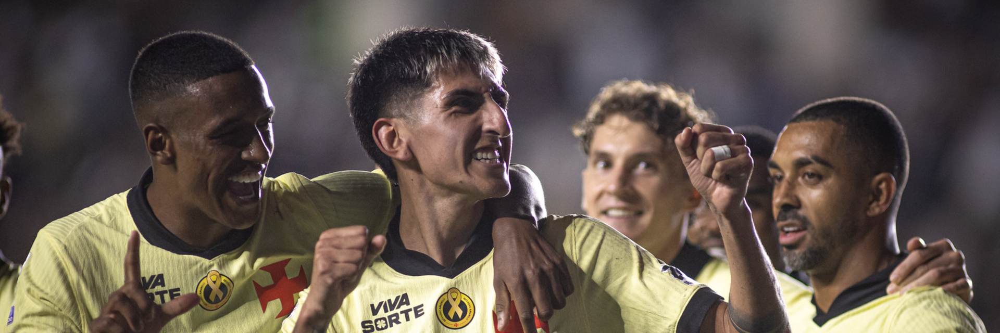
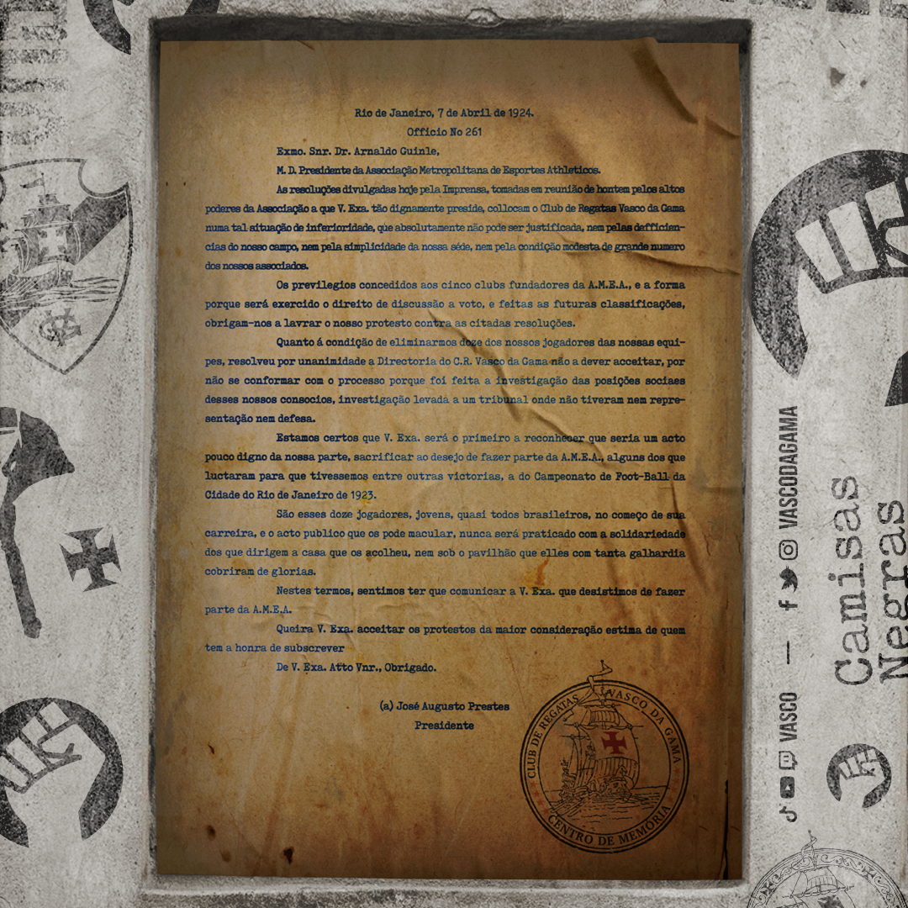

Página Inicial
Bem-vindo ao Aqui é Vasco. Este espaço foi criado para compartilhar informações, curiosidades e momentos marcantes da história do Club de Regatas Vasco da Gama.

Resposta Histórica
Em 1924, o Vasco ficou marcado pela defesa da igualdade e da inclusão no futebol brasileiro. O clube recusou-se a excluir atletas por questões sociais ou raciais, deixando um importante legado para o esporte nacional.

Curiosidades
- O Vasco da Gama foi fundado em 21 de agosto de 1898.
- O nome homenageia o navegador português Vasco da Gama.
- São Januário foi inaugurado em 1927.
- O clube é conhecido por sua luta histórica pela inclusão.
- A torcida vascaína está entre as maiores do Brasil.